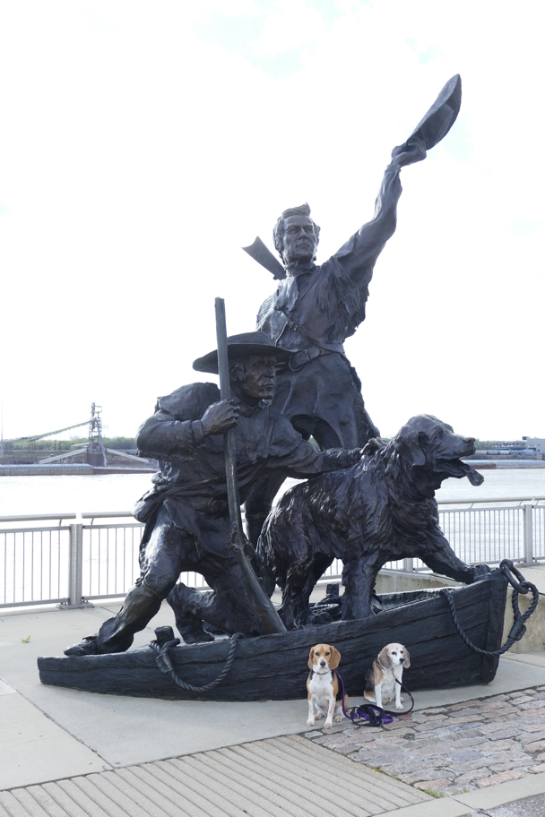

<--Previous Up Next-->

This sculpture commemorates the return of Lewis and Clark, and their Newfie Seaman, to St. Louis after their two-year expedition to the Oregon Territory.
Halley Beagle Missouri St. Louis Wallace Beagle